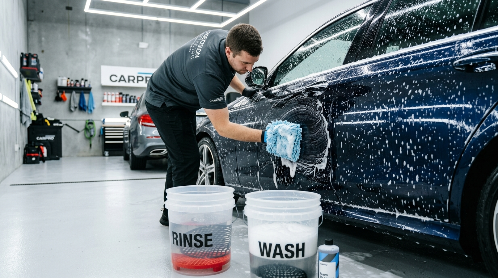

- Início
- Sobre a FG Car
- A Oficina & Estrutura
- Fale Conosco / Contato
- 🛠️ Serviços Especializados
- Cabine de Pintura Profissional
- 📝 Blog FG Car
- Localização & Como Chegar
Correção profunda de verniz que elimina micro-riscos, teias de aranha (swirls), hologramas e manchas de chuva ácida. Devolvemos a nitidez óptica e o espelhamento profundo de concessionária com selante protetor hidrofóbico que repele água e sujeira.

Ao contrário de ceras rápidas que apenas maquiam defeitos por algumas lavagens, o polimento técnico nivela o verniz de forma definitiva e segura.
Lavagem técnica detalhada e uso de clay bar para remover seiva de árvore, piche e fuligem de freio incrustados no verniz.
Aferição da espessura do verniz em múltiplos pontos da lataria para garantir que o corte remova apenas a camada danificada com 100% de margem de segurança.
Três etapas com boinas de lã e espuma e compostos alemães sem silicone, eliminando 95% dos riscos sem deixar marcas de holograma.
Aplicação de selante sintético de sílica que sela os poros do verniz, conferindo toque aveludado e escudo contra chuva ácida e raios UV.
Polimentos comerciais baratos utilizam politrizes rotativas desreguladas com ceras cheias de silicone. Sob a luz do sol, o carro fica repleto de "fantasmas" (hologramas) e, após três lavagens com sabão neutro, os riscos antigos reaparecem ainda piores.
O nosso polimento técnico & cristalização em Osasco e região não esconde defeitos: ele remove fisicamente a oxidação superficial e os micro-riscos. O resultado é permanente. Além disso, se o seu carro tiver pequenos amassados de porta ou granizo, realizamos previamente o Martelinho de Ouro Express para que a lataria fique completamente lisa antes do polimento.

Depois que o verniz é nivelado e ganha pureza óptica de espelho, deixá-lo exposto à chuva ácida de São Paulo e ao calor intenso faria o brilho se degradar rapidamente. É por isso que a cristalização é indispensável.
O selante cristalizador cria uma barreira nanotecnológica com alto ângulo de contato com a água. A sujeira e o pó de freio não conseguem ancorar no verniz, tornando as lavagens futuras muito mais rápidas e sem risco de novos arranhões. Se houver raspados no para-choque plástico, integramos o cuidado com a Recuperação de Para-choques.

Entenda por que a técnica e o tempo investido transformam completamente a aparência do seu veículo.
| Etapa / Ferramenta | Polimento Técnico & Cristalização (FG Car) | Polimento Comercial de Posto / Lava-Jato |
|---|---|---|
| Equipamento Usado | Politriz Roto-Orbital (sem queima de quinas) | Politriz Rotativa pesada que cria hologramas |
| Compostos Polidores | Microabrasivos à base de água (zero silicone/maquiagem) | Massas de polir antigas com solvente e querosene |
| Tempo Dedicado | De 6 a 12 horas de trabalho técnico minucioso | 30 a 50 minutos feito às pressas |
| Durabilidade do Brilho | Até 12 meses com proteção cristalizada ativa | Some após 2 ou 3 lavagens comuns |
| Segurança do Verniz | Micrômetro garante preservação da camada protetora | Desgaste excessivo do verniz, podendo queimar |
Orientações essenciais para proteger a pintura do seu carro com inteligência.
Não, quando executado tecnicamente. Na FG Car medimos a espessura da camada com micrômetro antes de iniciar. Removemos apenas de 2 a 4 micras da camada oxidada superficial, deixando o verniz espesso, resistente e protegido pela cristalização.
A cristalização utiliza selantes sintéticos de sílica que duram de 6 a 12 meses, oferecendo excelente custo-benefício e alto brilho. A vitrificação cerâmica (coating 9H) cria uma película de quartzo mais rígida com durabilidade de até 3 anos. Ambas exigem um polimento técnico prévio impecável.
Se o risco ultrapassou o verniz e atingiu o primer ou a lata (o teste clássico da unha enroscando), o polimento suaviza as bordas ópticas, mas a correção total exigirá nosso serviço de Spot Repair (retoque rápido) ou micropintura localizada.
Geralmente o processo completo (descontaminação, 3 etapas de polimento e tempo de cura do selante cristalizador) leva de 1 a 2 dias úteis, garantindo um resultado de showroom sem pressa ou marcas residuais.